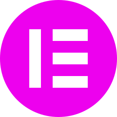
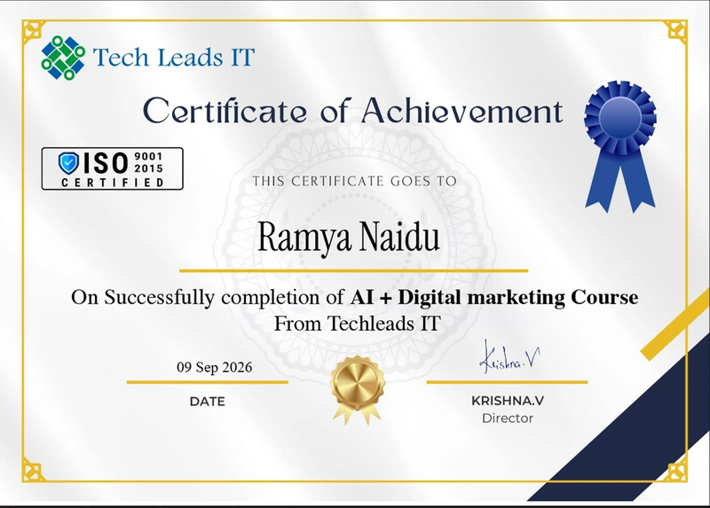

YOUR PORTFOLIO / 02CONTENT
+ VISIBILITY.
02+ VISIBILITY.
✳
PLAN. CREATE. GET FOUND.LIVE ONLINE · 12 WEEKS / BUILT FOR YOUR NEXT STEP
Attention: Students, freshers and career starters who want to start a career in digital marketing.
You don’t need years of experience to get started. Follow our structured 12-week programme blindly and learn step by step from the fundamentals to advanced AI-powered digital marketing techniques in just three months.
See the teaching. Explore the projects. Decide if it fits.
A page with a purpose.
Content with direction.
A connected next step.
GET ANSWERS BEFORE YOU CHOOSE
Wondering whether you can start from zero, keep up with the tools or get help when you’re stuck? Start with the basics, practise through guided projects and ask your trainer questions along the way.
Yes. You don’t need marketing experience or coding skills. Start with the basics, then learn how websites, content and ads work together—one step at a time.
You’ll put the lessons into practice through three guided projects: a landing page, a content campaign and a growth plan. Build work you can show and practise explaining your decisions.
Ask your trainer during live classes, get feedback on your projects and revisit recordings when you need a refresher. You’ll have guidance to help you understand what to improve and what to try next.
THE LEARNING, IN THEIR WORDS
Learning experiences shared on our course page. Individual experiences vary.
THE WORK YOU TAKE WITH YOU
You don’t need a portfolio to begin. You’ll build one as you learn.
These three guided projects give you practical work to show—and decisions to explain in an interview.
Start by understanding who a business wants to reach. Then use WordPress to build a page that explains its offer and guides visitors towards an enquiry. No coding experience needed.
In an interview: Walk through your page and explain who it is for, why you chose the message and what you want visitors to do.

Find out what your audience searches for, choose useful topics and create a 30-day content plan. Use SEO and creative tools to give each piece a clear purpose.
In an interview: Show how you turn audience research into content ideas—a practical skill for SEO, content and social media roles.
Plan how a business can reach people through ads, track their enquiries and follow up using CRM, email or WhatsApp. Bring those steps together in a 90-day growth plan.
In an interview: Explain how ads, measurement and follow-up fit together, with a plan that shows your thinking beyond individual tools.
Go into interviews with work to open, decisions to explain and a process you understand.
IS THIS COURSE RIGHT FOR YOU?
You need a place to start, a clear path to follow and the willingness to practise. Here’s how this programme can fit your next step.
LESS GUESSWORK. MORE GUIDED PRACTICE.
Free tutorials and AI tools can help you get started. This programme brings a learning path, practical projects and trainer feedback together—so you know what to work on next.
Swipe to compare learning approaches →
| What matters when you’re starting | TECH LEADS ITGuided live programme | Learning through free tutorials | Learning with AI tools alone |
|---|---|---|---|
| Knowing where to begin | A structured 12-week path from the fundamentals | You choose the topics and organise the sequence | You decide what to ask and what to learn next |
| Turning lessons into work | Three guided capstone projects for your portfolio | You select and organise your own practice projects | Can help you draft and build; you define and check the work |
| Getting help when stuck | Live questions and trainer feedback on your work | Comments or communities, where available | Instant suggestions that you need to verify |
| Connecting the tools | Websites, content, ads, tracking and follow-up in one programme | You connect lessons from different sources | You supply the context and connect the steps |
| Preparing for interviews | Portfolio guidance, resume preparation and mock interviews | You arrange your own preparation and feedback | Can help rehearse answers; you evaluate the feedback |
| Time and flexibility | Scheduled live classes plus recordings for six months | Learn at your own pace, around your schedule | On-demand help, subject to the tool’s availability |
| Course investment | ₹44,999 excluding GST for the programme | Free content; tools or extra resources may cost more | Free or paid plans, depending on the tool |
A comparison of learning approaches, not individual providers. Tutorials and AI tools can complement guided learning; the right choice depends on the structure and support you need.
You’ll work towards practical outputs you can open, improve and explain.
Show how your message guides a visitor towards an enquiry.
Explain how audience needs shape your topics and creative.
Walk through the journey from an ad to tracking and follow-up.
Practise explaining what you built and why you made each decision.
See the approach. Ask your questions. Decide if it’s right for you.
YOUR 12-WEEK PATH · SIX CONNECTED STAGES
Start with the customer. Build the page. Plan the content.
Then connect campaigns, measurement and follow-up. Scroll to see each stage unfold.
SCROLL TO FOLLOW YOUR LEARNING JOURNEY
12 weekly modules · Live online · Three capstones
Turn your research into a clear brief.
Illustrative learning output · Your projects develop through practice.
BUILD SKILLS THAT GO BEYOND THE BUTTONS
Use AI to research ideas, draft content and support your creative work. Learn to check what it produces, improve it and choose the right tool for the task—so every output serves a clear marketing goal.
tools & extensions, connected to practical tasks.
Research an audience. Build a page. Create content. Track what happens.

LEARN WITH SOMEONE WHO CAN GUIDE YOUR NEXT STEP
You don’t have to work out every problem alone. Learn with Veera Subramanyam Aki, bring your questions to class and use his feedback to improve your projects as you build them.
Trainer’s professional experience.
TURN YOUR PRACTICE INTO CAREER PREPARATION
When an interviewer asks what you can do, open your work.
Our hiring team helps you prepare your portfolio, resume and interview answers so you can present your skills clearly.
Organise your projects around the problem, your approach and the work you produced. Give interviewers something specific to explore with you.
Strengthen your resume and rehearse your answers in mock interviews. Get comfortable explaining your projects and the decisions behind them.
Use placement assistance to explore entry-level opportunities that fit your interests and preparation. Understand how your project skills relate to the roles you pursue.
Placement assistance supports your preparation and search. Employers make hiring decisions; roles and salaries depend on their requirements and your demonstrated skills.

COMPLETE THE WORK. MARK YOUR PROGRESS.
Earn the Tech Leads IT Digital Marketing Professional Certificate with at least 96% attendance, completed projects and a passed mock interview.
YOUR LEARNING, PRACTICE AND SUPPORT—TOGETHER
Your fee brings together live teaching, three portfolio projects and career preparation.
Explore the programme in a free Live Session and get clear on what you’re choosing.
Excluding GST. Taxes and final payable amount are confirmed before payment.
Explore the teaching and projects before you enrol.
When offered: pay 50% first, then the remaining 50% within one month of your first payment.
14-day refund request window
Full refund requests within 14 days of payment are processed within 48 hours.
YOUR PROGRAMME INCLUDES
Follow a clear sequence and ask questions as you learn.
Create work you can show and explain in interviews.
Prepare your portfolio, strengthen your resume and practise your answers.
Paid and unpaid opportunities are listed; individual arrangements vary.
Replay a lesson when you need it and keep practising after class.
Semrush, n8n and WordPress practice access for three months. Elementor Pro lifetime access under the provider’s arrangement.
Research ideas, compare opportunities and support your project decisions.
A tool covered in class is not automatically an individual paid subscription. Review access terms, taxes and payment details before enrolling.
STEP INSIDE YOUR FREE LIVE SESSION
Explore the teaching approach, the projects and the programme.
Bring your questions and find out how the course fits your goals.
A clearer view of the course.
Before you commit.
Understand the approachSee how live learning and guided practice fit together.
Explore the three projectsGet a clearer idea of the work you’ll build.
Ask what matters to youDiscuss the syllabus, schedule and next steps.
The team will confirm the next available date, time and joining details.
Surrounding panels illustrate course topics. Explore the teaching in your Live Session.
YOUR NEXT STEP STARTS HERE
Tell us a little about yourself so our career advisor can help you choose your next step.
Call a career advisor ↗+91 81429 29394
GET CLEAR BEFORE YOU COMMIT
From starting at zero to planning your time and payment, get the details that help you decide.
YOU DON’T NEED ALL THE ANSWERS TO TAKE THE FIRST STEP.
Explore the course, ask your questions and see how you could build your first digital marketing portfolio.
Prefer to talk? Call a career advisor: +91 81429 29394 ↗No course payment to attend. Get clarity before you choose.